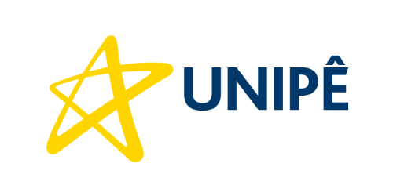

Você está sendo convidado a participar da pesquisa “CONHECIMENTO DE ESTUDANTES DE GRADUAÇÃO SOBRE O MANEJO DA FIBROMIALGIA EM UM CENTRO UNIVERSITÁRIO NA PARAÍBA”, coordenada pelo professor: LUIZ HENRIQUE DA SILVA, vinculado ao CENTRO UNIVERSITÁRIO DE JOÃO PESSOA – UNIPÊ.
Sua participação é voluntária e você poderá desistir a qualquer momento, retirando seu consentimento, sem que isso lhe traga nenhum prejuízo, penalidade ou qualquer tipo de constrangimento junto à instituição de ensino. Este estudo tem por objetivo analisar o conhecimento de estudantes dos cursos de graduação em Enfermagem, Medicina, Fisioterapia e Psicologia de um centro universitário sobre o manejo terapêutico da Fibromialgia (FM). Justifica-se pela importância de identificar o nível de conhecimento e as lacunas na formação acadêmica sobre essa condição, de modo a subsidiar reflexões e possíveis melhorias no processo de ensino-aprendizagem relacionado ao tema, contribuindo para uma assistência mais qualificada aos pacientes com Fibromialgia.
Caso decida participar, você responderá a um questionário eletrônico autoaplicável, disponibilizado por meio deste forms contruído pelos alunos do projeto de pesquisa, contendo questões objetivas relacionadas ao seu perfil sociodemográfico, socioeconômico e acadêmico, à sua trajetória de contato com o tema Fibromialgia durante a graduação, bem como questões sobre seu conhecimento e percepção acerca do manejo terapêutico dessa condição. O preenchimento é individual, não presencial. Não haverá entrevista presencial, gravação de áudio ou vídeo.
Por se tratar de coleta de dados por meio de formulário eletrônico autoaplicado, este estudo apresenta risco mínimo, podendo eventualmente gerar cansaço, timidez ou algum desconforto ao responder determinadas perguntas, especialmente aquelas relacionadas à autoavaliação de conhecimento ou a experiências pessoais/familiares com a Fibromialgia. Caso sinta qualquer desconforto, você poderá interromper o preenchimento a qualquer momento, sem necessidade de justificativa, retornando a ele posteriormente ou desistindo definitivamente, sem qualquer prejuízo. Quanto à coleta e ao armazenamento dos dados, o risco identificado corresponde a eventual vazamento de informações, o qual será minimizado por meio de armazenamento seguro e anonimização das respostas, conforme descrito adiante.
Não haverá benefício direto e imediato a você pela participação na pesquisa. Espera-se, no entanto, que os resultados obtidos possam beneficiar estudantes, docentes e a instituição de ensino, ao subsidiar a identificação de lacunas na formação sobre Fibromialgia e possíveis melhorias curriculares e pedagógicas, além de contribuir, indiretamente, para a qualificação da futura assistência prestada aos pacientes com essa condição. Ressalta-se que todas as informações obtidas por meio deste estudo são confidenciais, e seu nome não será identificado em nenhum momento, nem na coleta, nem na divulgação dos resultados. As respostas ao formulário serão armazenadas de forma segura, com acesso restrito à equipe de pesquisa, e os dados serão analisados de forma agregada. Os resultados poderão ser apresentados em eventos científicos e publicados em periódicos acadêmicos, sempre preservando o anonimato dos participantes.
Considerando que a participação ocorre de forma remota, por meio de formulário eletrônico, não são esperados gastos decorrentes da sua participação. Caso, ainda assim, você venha a ter algum gasto comprovadamente decorrente da pesquisa, terá direito a ressarcimento. Da mesma forma, em caso de dano comprovadamente decorrente da participação na pesquisa, você terá direito a indenização, conforme legislação vigente. Em caso de dúvidas sobre a pesquisa, você poderá entrar em contato com o pesquisador responsável, LUIZ HENRIQUE DA SILVA, pelo telefone: (83) 98117-4187 ou pelo e-mail: luizs@unipe.edu.br.
Eu entendi que esta pesquisa é acompanhada pelo Comitê de Ética em Pesquisa que defende os interesses dos sujeitos da pesquisa em sua integridade e dignidade e para contribuir no desenvolvimento da pesquisa dentro de padrões éticos, além disso é responsável pela avaliação e acompanhamento dos aspectos éticos de todas as pesquisas envolvendo seres humanos. Além disso, entendi que posso entrar em contato com o Comitê pelo telefone (83) 2106 – 9266 ou e-mail: cep@unipe.edu.br.